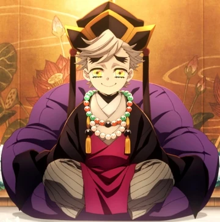

Doma: The Smiling Demon
Among the many terrifying demons in Demon Slayer: Kimetsu no Yaiba, few characters are as disturbing as Doma. While most demons rely on rage, cruelty, or brute strength, Doma stands apart with something far more disturbing: a cheerful smile hiding complete emotional emptiness. He laughs, jokes, and speaks kindly — even while committing horrific acts. This strange contrast makes him one of the most memorable antagonists in the series.
Doma is one of the Twelve Kizuki, the elite group of demons serving the Demon King Muzan Kibutsuji. More specifically, he holds the position of Upper Rank Two, making him one of the strongest demons in existence.
Unlike many powerful villains, Doma doesn’t behave like a typical monster. He often looks friendly and calm. He speaks politely, makes jokes, and smiles constantly. That calmness is exactly what makes him more terrifying. Because behind that smile lies someone who cannot truly feel emotions at all.
Character Profile
 Young Doma |
 Demon Doma |
|---|---|
| Name | Doma (also written as Douma) |
| Alias | The Smiling Demon |
| Affiliation | Twelve Kizuki (Upper Rank Two) |
| Creator | Muzan Kibutsuji |
A Cult Leader Turned Demon
Doma’s human life was already unusual. He was born with rainbow-colored eyes, which people believed were divine. Because of this, his parents made him the leader of a religious cult that worshiped him as a spiritual figure. Members of the cult believed he could guide them to happiness and salvation.
But the truth was very different. Even as a child, Doma felt no emotions — no sadness, no joy, no anger. When followers cried about their suffering, he listened politely but felt absolutely nothing. To him, human pain was simply something he observed, not something he understood.
Eventually, Doma encountered Muzan Kibutsuji, who turned him into a demon. After becoming a demon, Doma’s lack of empathy became even more dangerous. He continued running his cult, but now he literally consumed his followers, believing he was “saving” them by letting them live inside him forever. This twisted logic perfectly shows how distorted his worldview truly is.
Personality
At first glance, Doma appears friendly, polite, and cheerful. He constantly smiles, speaks kindly, and rarely shows anger — even during brutal battles. But this politeness is only an illusion.
Doma is emotionally empty. He cannot truly feel emotions such as love, sadness, guilt, or empathy. When people suffer, he observes them with curiosity rather than compassion. Since he cannot understand human suffering emotionally, he developed a warped belief: by consuming humans, he is saving them from the pain of life. To him, it’s a form of mercy.
This contrast between his warm smile and cold indifference makes Doma one of the most disturbing personalities in the series. He acts like a gentle friend, yet thinks like a completely detached predator.
Abilities & Blood Demon Art
- Cryokinesis: The supernatural ability to generate and manipulate lethal ice and frost from his own blood.
- Pulverized Ice: A passive fog of frozen blood that causes rapid necrosis of the lungs when inhaled.
- Frozen Lotus: Creates sharp, jagged ice lotuses used to ensnare and slice opponents at high speeds.
- Crystalline Divine Child: Produces miniature ice clones that can perform his same Blood Demon Arts independently.
- Cold White Princesses: Summons humanoid ice figures that exhale massive gusts of sub-zero, bone-chilling wind.
- Rime — Water Lily Bodhisattva: His ultimate technique; a gargantuan ice statue capable of crushing physical and freezing attacks.
- Tessenjutsu Mastery: Elite martial arts using dual golden war fans to deliver precision strikes at subsonic speeds.
- High-Speed Regeneration: The ability to regrow limbs instantly and neutralize lethal doses of Wisteria poison internally.
- Biological Absorption: Allows him to instantly merge human bodies into his own through simple physical contact.
Why Fans Hate Doma?
- Void of Humanity: He is a clinical sociopath who lacks even the most basic human empathy or remorse.
- The Kocho Tragedy: He is responsible for the deaths of fan-favorites, Kanae Kocho and Shinobu Kocho.
- Cruelty to Inosuke: He murdered Inosuke’s mother, Kotoha, and took sadistic pleasure in mocking her memory.
- False Salvation: He manipulates his cult followers, saving them by consuming them in a horrific betrayal of faith.
- Targetting Women: Doma targets women specifically, a trait that even other demons like Akaza find revolting.
Why Fans Love Doma?
- Iconic Aesthetics: His rainbow-colored eyes and silver hair make him one of the most aesthetic characters.
- Deadly Elegance: His ice-based Blood Demon Art is as visually breathtaking as it is strategically lethal.
- A Refreshing Villain: His lack of a tragic backstory makes him a rare and pure antagonist who is fun to watch.
- Unsettling Charm: His cheerful, polite mask creates a terrifying and memorable contrast with his murderous actions.
- Comedic Dynamics: His interactions with other Upper Moons, especially annoying Akaza, are entertaining to watch.
Conclusion
In a series filled with tragic demons and emotional backstories, Doma stands out as something far stranger. He is not driven by revenge, ambition, or hatred. He simply exists without feeling anything at all. And sometimes, that emptiness is far more frightening than hatred.
Doma represents something different from typical villains. He symbolizes emotional emptiness—a being who imitates kindness without understanding it. In many ways, Doma acts like a mirror showing how meaningless morality becomes when empathy disappears.